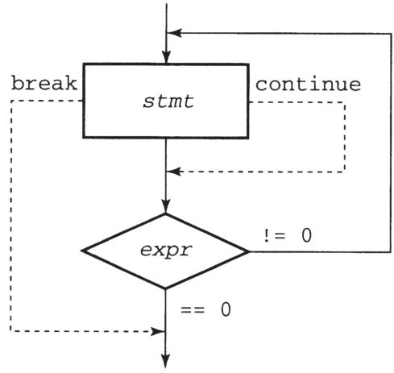

Capítulo 4 Declaraciones
En este capítulo, encontrará que C implementa todas las declaraciones que tienen otros lenguajes modernos de alto nivel. Además, la mayoría de ellos funcionan de la forma esperada. La instrucción if se usa para seleccionar uno de los varios códigos candidatos a ejecutar, mientras que las instrucciones while, for y do se usan para implementar diferentes tipos de bucles.
Sin embargo, en comparación con otros lenguajes, las declaraciones de C todavía tienen algunas diferencias. Por ejemplo, C no tiene sentencias de asignación especiales, sino que usa "sentencias de expresión". La instrucción switch implementa la función de la instrucción case en otros lenguajes, pero la forma en que se implementa es inusual.
Sin embargo, antes de discutir los detalles de las declaraciones de C, revisemos primero los
diferentes
tipos de fuentes que usaré en la descripción gramatical. El código se Courier Newexpresará estrictamente y la descripción abstracta del código se expresará en
cursivaCourier New . Algunas declaraciones también tienen
partes opcionales. Si decide utilizar la parte opcional, estará estrictamente en negritaCourier New . Las descripciones de las partes
opcionales del código estarán en negrita y cursivaCourier New . Al mismo tiempo, la sangría utilizada al describir la
sintaxis de la declaración será la misma que la sangría utilizada en el ejemplo del programa. Estos espacios en
blanco no son importantes para el compilador, pero son extremadamente importantes para la persona que lee el
código
(probablemente usted).
4.1 Declaración vacía
La declaración más simple en C es la declaración vacía , que en sí misma contiene solo un punto y coma. La declaración vacía en sí misma no realiza ninguna tarea, pero a veces es útil. Se aplica a situaciones en las que la gramática requiere una declaración completa, pero no la necesita para realizar ninguna tarea. Algunos ejemplos más adelante en este capítulo contienen algunas declaraciones vacías.
4.2 Declaración de expresión
Dado que C no tiene una "instrucción de asignación" especial, ¿cómo realiza la asignación? La respuesta es que la asignación es una operación, al igual que la suma y la resta, por lo que la asignación se realiza dentro de expresiones.
Solo necesita agregar un punto y coma después de la expresión para convertir la expresión en una declaración. Por lo tanto, las siguientes dos expresiones
x = y + 3;
ch = getchar();En realidad, es una declaración de expresión, no una declaración de asignación.
advertir:
Es muy importante comprender esta diferencia, porque declaraciones como las siguientes son perfectamente legales:
y + 3;
getchar();Cuando se ejecutan estas declaraciones, las expresiones se evalúan, pero sus resultados no se almacenan en ningún lugar porque no utilizan operadores de asignación. Por lo tanto, la primera oración no tiene ningún efecto y la segunda oración lee el siguiente carácter en la entrada, pero luego lo descarta [1] .
Si le parece extraño escribir una declaración que no tiene ningún efecto, considere la siguiente declaración:
printf( "Hello world!\n");printf es una función, la función devolverá un valor, pero normalmente no nos importa el valor de retorno de la función printf (el número de caracteres que imprime), por lo que es normal ignorarlo. El llamado "sin efecto" simplemente significa que se ignora el valor de la expresión. La función printf se realiza un trabajo útil, tal efecto se denomina " efecto secundario (efecto secundario)".
Aquí hay otro ejemplo:
a++;Esta declaración no tiene un operador de asignación, pero es una declaración de expresión muy razonable. El operador ++ aumentará el valor de la variable a, que es su efecto secundario. También hay algunos operadores con efectos secundarios, los discutiré en el próximo capítulo.
4.3 Bloque de código
Un bloque de código es una lista de declaraciones y declaraciones opcionales dentro de un par de llaves. La sintaxis del bloque de código es muy sencilla:
{
declarations
statements
}
Los bloques de código se pueden usar cuando se requieren declaraciones. Le permite usar múltiples declaraciones donde la gramática solo requiere una declaración. El bloque de código también le permite colocar la declaración de los datos muy cerca de donde se usa.
4.4 declaración if
La instrucción if en C no es muy diferente de las instrucciones if en otros idiomas. Su sintaxis es la siguiente:
if( expression )
statement
else
statement
Los paréntesis son parte de la instrucción if, no parte de la expresión, por lo que debe aparecer, incluso para expresiones extremadamente simples.
advertir:
Las dos partes de declaración anteriores pueden ser bloques de código. Un error común es olvidarse de agregar llaves al escribir la segunda declaración en cualquier cláusula de declaración de una declaración if. Muchos programadores tienden a agregar llaves en todo momento para evitar este tipo de error.
Si el valor de la expresión es verdadero, entonces se ejecuta la primera instrucción; de lo contrario, se omite. Si hay una cláusula else , la declaración posterior se ejecutará solo cuando el valor de expresión sea falso.
Solo hay una diferencia entre las declaraciones if en C y las declaraciones if en otros idiomas. C no tiene un tipo booleano, pero usa un tipo entero en su lugar. De esta manera, expresión puede ser cualquier expresión que pueda producir un resultado entero: un valor cero significa "falso" y un valor distinto de cero significa "verdadero".
C tiene todos los operadores relacionales que espera, pero su resultado es el valor entero 0 o 1, no el booleano "verdadero" o "falso". Los operadores relacionales se utilizan de esta manera para realizar las funciones de los operadores relacionales en otros lenguajes.
En la declaración if anterior, el valor de la expresión x> 3 será 0 o 1. Si el valor es 1, imprimirá Mayor; si el valor es 0, imprimirá No mayor.
Las variables enteras también se pueden utilizar para representar valores booleanos, como se muestra a continuación:
La función de este segmento de código es exactamente la misma que la del segmento de código anterior, la única diferencia entre ellos es que el resultado de la comparación (0 o 1) se almacena primero en una variable y luego se prueba. Aquí hay una trampa potencial. Aunque todos los valores distintos de cero se consideran verdaderos, comparar dos valores distintos de cero para la igualdad resultará en falso. Discutiré este tema en detalle en el próximo capítulo.
Cuando aparecen las sentencias if anidadas, habrá un problema de "otro colgando". Por ejemplo, en el siguiente ejemplo, ¿a qué instrucción if crees que pertenece la cláusula else?
Aquí introduzco una sangría deliberada en la cláusula else de una manera extraña, pero no te doy ninguna pista. La respuesta a esta pregunta, como la mayoría de los otros lenguajes, es que la cláusula else está subordinada a la declaración if incompleta más cercana a ella. Si desea que esté subordinado a la primera instrucción if, puede completar la segunda instrucción if y agregar una cláusula else vacía, o encerrarla en un bloque de código con llaves, como se muestra a continuación Mostrar:
4.5 declaración while
La instrucción while en C también tiene muchas similitudes con las instrucciones while en otros idiomas. La única diferencia real es su parte de expresión, que es similar a una declaración if. La siguiente es la sintaxis de la instrucción while:
while( expression )
statement
La prueba de bucle se realiza antes de que el cuerpo del bucle comience a ejecutarse, por lo que si el resultado de la prueba es falso al principio, el cuerpo del bucle no se ejecutará en absoluto. De manera similar, cuando el cuerpo del bucle requiere varias declaraciones para completar la tarea, se puede implementar mediante bloques de código.
4.5.1 declaraciones de interrupción y continuación
La sentencia break se puede utilizar en el ciclo while para terminar el ciclo de forma permanente. Después de que se ejecuta la instrucción de interrupción, la siguiente instrucción ejecutada en el flujo de ejecución es la instrucción que debe ejecutarse después de que el ciclo finalice normalmente.
También puede utilizar la instrucción continue en el ciclo while, que se utiliza para terminar permanentemente el ciclo actual. Después de ejecutar la instrucción continue, el siguiente paso en el flujo de ejecución es volver a probar el valor de la expresión y decidir si continuar el ciclo.
Si alguna de estas dos declaraciones aparece dentro de un bucle anidado, solo afecta al bucle más interno. No puede usar declaraciones break o continue para afectar la ejecución del bucle externo.
4.5.2 El proceso de ejecución de la instrucción while
Ahora podemos ilustrar el flujo de control en el ciclo while en forma de gráfico. Teniendo en cuenta que es posible que algunos lectores nunca hayan visto el diagrama de flujo antes, daré una pequeña explicación aquí. Los diamantes representan juicios, los recuadros representan acciones que deben realizarse y las flechas representan el flujo de control entre ellos. La figura 4.1 ilustra el proceso de operación de la instrucción while. Su ejecución comienza desde arriba, que consiste en calcular el valor de la expresión expr. Si su valor es 0, el ciclo termina. De lo contrario, se ejecuta el cuerpo del bucle y luego el flujo de control vuelve a la parte superior y se reinicia el siguiente bucle. Por ejemplo, el siguiente ciclo copia caracteres de la entrada estándar a la salida estándar hasta que se encuentra la marca de fin de archivo.
while((ch=getchar())!=EOF)
Putchar(ch);Figura 4.1 El proceso de ejecución de la instrucción while
Si la instrucción continue se ejecuta en el cuerpo del bucle, el resto del cuerpo del bucle ya no se ejecutará, pero comenzará inmediatamente el siguiente ciclo. La instrucción continue es muy útil cuando el cuerpo del bucle solo se ejecutará cuando encuentre ciertos valores.
Otro método es transferir la prueba a la instrucción if y dejar que controle el flujo de todo el ciclo. La diferencia entre estos dos métodos es solo de estilo y no hay diferencia en la eficiencia de ejecución.
Si se ejecuta una declaración de interrupción dentro del ciclo, el ciclo se cerrará permanentemente. Por ejemplo, necesitamos procesar una lista de valores que terminan con un valor negativo:
Otra forma es agregar esta prueba a la expresión while, como se muestra a continuación:
while( scanf( "%f", &value ) == 1 && value >= 0 ) {Sin embargo, si se deben realizar algunos cálculos antes de poder probar el valor, es más difícil utilizar este estilo.
insinuación:
Ocasionalmente, la instrucción while puede completar la tarea de toda la instrucción en la expresión, por lo que el cuerpo del ciclo no tiene nada que ver. En este caso, el cuerpo del bucle está representado por una declaración vacía. Es mejor usar una sola línea para representar una declaración vacía. Como se muestra en el ciclo a continuación, descarta los caracteres restantes en la línea de entrada actual.
while( (ch = getchar() ) != EOF && ch != '\n' )
;Este formulario muestra claramente que el cuerpo del bucle está vacío, para no hacer que la gente piense erróneamente que la siguiente declaración del programa es el cuerpo del bucle.
4.6 para declaración
La instrucción for en C se usa más comúnmente que la instrucción for en otros idiomas. De hecho, la instrucción C for es una abreviatura de una forma de combinación de instrucción muy común del ciclo while. La sintaxis de la instrucción for es la siguiente:
for( expression1; expression2; expression3 )
statement
La declaración se llama cuerpo del bucle. expression1 es la parte de inicialización , solo se ejecuta una vez al comienzo del ciclo. expression2 se llama parte condicional , debe ejecutarse una vez antes de cada ejecución del cuerpo del bucle, al igual que la expresión en la instrucción while. Expression3 se denomina parte de ajuste , que se ejecuta cada vez que se ejecuta el cuerpo del bucle, justo antes de que se ejecute la parte de condición. Las tres expresiones son opcionales y se pueden omitir. Si se omite la parte de la condición, significa que el valor de la prueba siempre es verdadero.
La instrucción break y la instrucción continue también se pueden usar en la instrucción for. La instrucción break sale inmediatamente del bucle y la instrucción continue transfiere el flujo de control directamente a la parte de ajuste.
El proceso de ejecución de la declaración for
El proceso de ejecución de la instrucción for es casi exactamente el mismo que el de la siguiente instrucción while:
La figura 4.2 describe el proceso de ejecución de la instrucción for. ¿Puedes encontrar la diferencia entre este y el enunciado while?
La diferencia entre el proceso de ejecución de la instrucción for y la instrucción while es cuando aparece la instrucción continue. En la instrucción for, la instrucción continue omite el resto del cuerpo del bucle y regresa directamente a la parte de ajuste. En la instrucción while, la parte de ajuste es parte del cuerpo del bucle, por lo que continue también la omitirá.
Figura 4.2 El proceso de ejecución de la instrucción for
insinuación:
El bucle for tiene una ventaja estilística: recopila todas las expresiones utilizadas para manipular el bucle y las coloca en el mismo lugar para facilitar la búsqueda. Esta ventaja es más prominente cuando el cuerpo del lazo es relativamente grande. Por ejemplo, el siguiente ciclo inicializa todos los elementos de una matriz a 0.
for( i = 0; i < MAX_SIZE; i += 1 )
array[i] = 0;El siguiente ciclo while realiza la misma tarea, pero debe observar en tres lugares diferentes para determinar cómo funciona el ciclo.
4.7 declaración de hacer
La instrucción do en lenguaje C es muy similar a la instrucción repeat en otros idiomas. Es muy similar a la instrucción while, excepto que su prueba se realiza después de que se ejecuta el cuerpo del bucle, en lugar de antes del cuerpo del bucle. Por lo tanto, el cuerpo de este bucle se ejecuta al menos una vez. La siguiente es su sintaxis.
do
statement
while( expression );
Como es habitual, si se necesitan varias sentencias en el cuerpo del bucle, pueden aparecer en forma de bloques de código. La figura 4.3 muestra el flujo de ejecución de la instrucción do.

Figura 4.3 El proceso de ejecución de la instrucción do
¿Cómo elegimos entre la instrucción while y la instrucción do?
Cuando necesite que el cuerpo del bucle se ejecute al menos una vez, elija hacer.
El siguiente bucle imprime de 1 a 8 espacios a su vez, utilizados para avanzar a la siguiente tabulación (cada 8 columnas es una unidad), describa su proceso de ejecución.
do{
column+=1;
putchar('');
}while(column%8!=0);4.8 declaración de cambio
La declaración de cambio de C es bastante inusual. Es similar a las declaraciones de casos en otros idiomas, pero hay una diferencia importante en un aspecto. Primero, echemos un vistazo a su sintaxis, donde el resultado de la expresión debe ser un valor entero.
switch( expression )
statement
Aunque es legal usar una sola declaración en el cuerpo de la declaración de cambio, obviamente no tiene sentido hacerlo. La declaración de cambio en el uso real es generalmente la siguiente:
switch( expression ){
statement-list
}
A lo largo de la lista de declaraciones hay una o más etiquetas de casos, en la siguiente forma:
case constant-expression:
Cada etiqueta de caso debe tener un valor único. La expresión constante se refiere a una expresión que se evalúa durante la compilación, no puede ser ninguna variable. Lo inusual aquí es que la etiqueta del caso no divide la lista de declaraciones en varias partes, solo determinan el punto de entrada de la lista de declaraciones.
Rastreemos la ejecución de la declaración de cambio. La primera es calcular el valor de expresión; luego, el flujo de ejecución va a la instrucción cuyo valor de etiqueta de caso coincide con el valor de expresión en la lista de instrucciones. Desde esta instrucción, hasta que el final de la lista de instrucciones es la parte inferior de la instrucción de cambio, se ejecutan todas las instrucciones entre ellas.
advertir:
¿Ha encontrado alguna diferencia en el proceso de ejecución de la instrucción de cambio? El flujo de ejecución se ejecutará a través de cada etiqueta de caso en lugar de permanecer en una sola etiqueta de caso, por lo que la etiqueta de caso solo determina el punto de entrada de la lista de declaraciones en lugar de dividirlos. Si cree que este comportamiento no parece tan correcto, hay una forma de corregirlo: la declaración de ruptura.
4.8.1 Declaración de interrupción en el conmutador
Si se encuentra una instrucción de interrupción durante la ejecución de una instrucción de cambio, el flujo de ejecución saltará inmediatamente al final de la lista de instrucciones. De todas las declaraciones de cambio en la declaración C, el 97% tiene una declaración de interrupción en cada caso. El siguiente programa de ejemplo verifica el carácter ingresado por el usuario y llama a la función seleccionada por el carácter para ilustrar el uso de la instrucción break.
switch( command ){
case 'A':
add_entry();
break;
case 'D':
delete_entry();
break;
case 'P':
print_entry();
break;
case 'E':
edit_entry();
break;
}El efecto real de la declaración de ruptura es dividir la lista de declaraciones en diferentes partes. De esta manera, la declaración de cambio puede funcionar de una manera más tradicional.
Entonces, ¿cuál es el punto de agregar una declaración de interrupción después de la última declaración de caso? No tiene ningún efecto en tiempo de ejecución porque ya no hay ninguna declaración después de él, pero no hay nada de malo en hacerlo. La razón para agregar esta declaración de interrupción es para facilitar el mantenimiento futuro. Si alguien decide agregar otro caso a esta declaración de cambio en el futuro, puede evitar la situación en la que se olvida agregar la declaración de interrupción después de la última declaración de caso anterior.
En la declaración de cambio, la declaración de continuación no tiene ningún efecto. Solo cuando la instrucción switch está dentro de un bucle, puede colocar la instrucción continue dentro de la instrucción switch. En este caso, es mejor decir que la instrucción continue actúa sobre la instrucción switch como actúa sobre el bucle.
Para permitir que el mismo grupo de declaraciones se ejecute con dos o más valores de expresión diferentes, puede hacer que corresponda a múltiples etiquetas de caso, como se muestra a continuación:
Esta técnica puede lograr el objetivo, porque el flujo de ejecución se ejecutará a través de estas etiquetas de casos paralelas. C no tiene una forma conveniente de especificar un rango de valores, por lo que cada valor en el rango debe darse en una etiqueta de caso separada. Si este rango es muy grande, probablemente debería usar una serie de declaraciones if anidadas en su lugar.
4.8.2 cláusula predeterminada
La siguiente pregunta es, ¿qué pasa si el valor de la expresión no coincide con el valor de todas las etiquetas de caso? En realidad, no es nada, se saltan todas las oraciones. El programa no terminará ni provocará ningún error, porque esta situación no se considera un error en C.
Pero, ¿qué sucede si no desea ignorar los valores de expresión que no coinciden con todas las etiquetas de mayúsculas y minúsculas? Puede agregar una cláusula predeterminada a la lista de declaraciones y poner la siguiente etiqueta
default:Escriba en cualquier posición donde pueda aparecer una etiqueta de caso. Cuando el valor de la expresión de cambio no coincide con el valor de todas las etiquetas de caso, se ejecutará la declaración que sigue a la cláusula predeterminada. Por lo tanto, solo puede aparecer una cláusula predeterminada en cada instrucción de cambio. Sin embargo, puede aparecer en cualquier lugar de la lista de sentencias y el flujo de sentencias se ejecutará a través de la cláusula predeterminada como una etiqueta de caso.
insinuación:
Es un buen hábito poner una cláusula predeterminada en cada declaración de cambio, porque al hacerlo se puede detectar cualquier valor ilegal. De lo contrario, el programa continuará ejecutándose con indiferencia, sin provocar ningún error. La única excepción razonable a esta regla es que el valor de la expresión ha sido verificado para su validez anteriormente, y solo está interesado en la parte del valor que puede aparecer en la expresión.
4.8.3 El proceso de ejecución de la declaración de cambio
¿Por qué se implementa la declaración de cambio de esta manera? Muchos programadores piensan que esto es un error, pero ocasionalmente es necesario dejar que la ejecución fluya de un grupo de instrucciones al siguiente.
Por ejemplo, considere un programa que cuenta el número de caracteres, palabras y líneas en la entrada del programa. Todos los caracteres deben contarse, pero los espacios y las tabulaciones también se utilizan como terminadores de palabras. Entonces, cuando se cuentan, el valor del contador de caracteres y el valor del contador de palabras deben aumentar. También hay un carácter de nueva línea, este carácter es el terminador de la línea y también el terminador de la palabra. Entonces, cuando ocurre un salto de línea, los valores de los tres contadores deben aumentar. Ahora, observe esta declaración de cambio:
Comparada con la situación que puede aparecer en el programa real, la lógica anterior es demasiado simple. Por ejemplo, si aparecen varios espacios juntos, solo el primer espacio se puede utilizar como terminador de palabras. Sin embargo, este ejemplo logra la función que necesitamos: las líneas nuevas aumentan los valores de los tres contadores, los espacios y las tabulaciones aumentan los valores de dos contadores y todos los demás caracteres solo aumentan el valor del contador de caracteres.
El comentario FALL THRU en el ejemplo anterior puede dejar claro al lector que el flujo de ejecución ahora se ejecutará a través de la etiqueta de caso. Sin este comentario, un programador de mantenimiento que no sea lo suficientemente cuidadoso para encontrar errores puede pensar que la falta de una declaración de interrupción aquí es un error, que es la raíz del error, por lo que ya no tendrán problemas para encontrar el error real. En cualquier caso, debido al hecho de que es muy raro dejar que el flujo de ejecución de la instrucción switch pase a través de la etiqueta del caso, cuando esto sucede, es fácil hacer que la gente piense erróneamente que se trata de un error. Sin embargo, al "arreglar" este problema, no solo se perdió el error que estaba buscando, sino que también introdujo errores nuevos. Haga el esfuerzo de escribir una nota ahora, y puede ahorrar mucho tiempo al mantener el programa en el futuro.
4.9 declaración goto
Finalmente, introduzcamos la instrucción goto, su sintaxis es la siguiente:
goto 语句标签 ;
Para utilizar una instrucción goto, debe agregar una etiqueta de instrucción delante de la instrucción a la que desea saltar. La etiqueta de la declaración es el identificador seguido de dos puntos. Las sentencias Goto que contienen estas etiquetas pueden aparecer en cualquier lugar de la misma función.
Goto es una declaración peligrosa, porque en el proceso de aprender C, es fácil formar una dependencia de él. Los programadores sin experiencia a veces usan sentencias goto para evitar pensar en el diseño del programa. Los programas escritos de esta manera siempre son mucho más difíciles de mantener que los programas escritos con cuidado. Por ejemplo, aquí hay un programa que usa sentencias goto para realizar la clasificación de intercambio de elementos de matriz.
Este es un programa pequeño, pero tienes que pasar mucho tiempo estudiándolo antes de poder descubrir su estructura. El siguiente es un programa con la misma función, pero no usa sentencias goto. Puedes ver fácilmente su estructura.
Sin embargo, en un caso, incluso para un programa bien estructurado, el uso de la instrucción goto puede ser muy apropiado, es decir, para saltar de múltiples bucles anidados. Dado que la instrucción break solo afecta al bucle más interno que la rodea, solo hay una forma de salir inmediatamente del bucle profundamente anidado, que es usar la instrucción goto. Como se muestra en el siguiente ejemplo:
Hay dos formas de evitar el uso de declaraciones goto en esta situación. La primera solución es establecer un indicador de estado cuando desee salir de todos los bucles, pero este indicador debe probarse en cada bucle:
Esta técnica puede lograr el propósito de salir de todos los bucles, pero la situación es muy complicada. Otra solución es poner todos los bucles en una sola función.Cuando un desastre golpea el bucle más interno, puede usar la instrucción return para salir de esta función. El capítulo 7 discutirá la declaración de devolución.
4.10 Resumen
Muchas declaraciones en C se comportan de manera similar a declaraciones similares en otros lenguajes. La sentencia if ejecuta sentencias basadas en condiciones, mientras que la sentencia while ejecuta repetidamente algunas sentencias. Dado que C no tiene un tipo booleano, estas declaraciones utilizan expresiones enteras cuando se prueban valores. Los valores cero se interpretan como falsos y los valores distintos de cero se interpretan como verdaderos. La instrucción for es una abreviatura de una combinación de bucles while de uso común. Recopila las expresiones que controlan el bucle y las coloca en un lugar para facilitar la búsqueda. La instrucción do es similar a la instrucción while, pero la primera puede garantizar que el cuerpo del bucle se ejecute al menos una vez. Finalmente, la instrucción goto transfiere el flujo de ejecución del programa de una instrucción a otra. En general, debemos evitar las declaraciones goto.
C también tiene algunas declaraciones que se comportan de manera ligeramente diferente a declaraciones similares en otros lenguajes. Las operaciones de asignación se realizan en declaraciones de expresión, no en declaraciones de asignación especiales. La tarea realizada por la sentencia switch es similar a la de las sentencias case en otros lenguajes, pero la sentencia switch se ejecuta a través de todas las etiquetas case cuando se ejecuta. Para evitar este comportamiento, debe agregar una declaración de interrupción después de cada declaración de caso. La cláusula predeterminada de la instrucción switch se utiliza para capturar la situación en la que el valor de todas las expresiones no coincide con el valor de todas las etiquetas de caso. Si no hay una cláusula predeterminada, cuando el valor de la expresión no coincide con el valor de todas las etiquetas de caso, se omitirá todo el cuerpo de la instrucción de cambio y no se ejecutará.
Cuando es necesario que aparezca una declaración pero no es necesario realizar ninguna tarea, se puede utilizar una declaración vacía. Los bloques de código le permiten escribir múltiples declaraciones donde la gramática requiere que aparezca una sola declaración. Cuando se ejecuta la instrucción break dentro del bucle, el bucle saldrá. Cuando la instrucción continue se ejecuta dentro del bucle, se omite el resto del cuerpo del bucle y el siguiente bucle comienza inmediatamente. En los bucles while y do, la posición donde comienza el siguiente bucle es la parte de prueba de expresión. Pero en el ciclo for, la posición donde comienza el siguiente ciclo es la parte de ajuste.
¡Eso es todo! C no tiene declaraciones de entrada / salida; la E / S se implementa llamando a funciones de biblioteca. C tampoco tiene declaraciones de manejo de excepciones, también se realizan llamando a funciones de biblioteca.
4.11 Resumen de advertencias
1. Escribe expresiones que no produzcan ningún resultado.
2. Asegúrese de agregar llaves alrededor de la lista de declaraciones en la declaración if.
3. En la declaración de cambio, el flujo de ejecución se retrasa inesperadamente de un caso al siguiente.
4.12 Resumen de consejos de programación
1. En un bucle sin un cuerpo de bucle, use un punto y coma para indicar una declaración vacía y deje que ocupe una línea por sí sola.
2. El bucle for es más legible que el bucle while porque recopila las expresiones utilizadas para controlar el bucle en un solo lugar.
3. Utilice la cláusula predeterminada en cada declaración de cambio.
4.13 Problema
 1. ¿Son legales las siguientes expresiones?
Si
es legal, ¿qué tarea realiza?
1. ¿Son legales las siguientes expresiones?
Si
es legal, ¿qué tarea realiza?
3 * x * x – 4 * x + 6;2. ¿Cuál es la sintaxis de la declaración de asignación?
3. ¿Es legal usar bloques de código de la siguiente manera? Si es legal, ¿alguna vez has querido usarlo así?
...
statement
{
statement
statement
}
statement
4. Cuando escribe una declaración if, si no
hay
una declaración en la cláusula then [2] , pero hay una declaración en la cláusula else, ¿cómo la
escribe? ¿Puedes cambiar a otras formas para lograr el mismo objetivo?
5. ¿Qué salida producirá el siguiente bucle?
int i;
...
for( i = 0; i < 10; i += 1 )
printf( "%d\n", i);6. ¿Cuándo es más apropiado usar una instrucción while que una instrucción for?
7. El siguiente fragmento de código se utiliza para copiar la entrada estándar a la salida estándar y calcular la suma de comprobación de los caracteres. ¿Hay algún error en él?
8. ¿Cuándo es más apropiado usar una instrucción do que una instrucción while?
9. ¿Qué resultado producirá el siguiente
fragmento de código? Nota: El operador% ubicado entre el operando izquierdo y el operando derecho se usa para
generar el resto de la división entre los dos.
10. Escriba algunas declaraciones para leer un valor entero de la entrada estándar y luego imprima algunas líneas en blanco. Este valor especifica el número de líneas en blanco.
11. Escriba algunas declaraciones para verificar e informar sobre algunos de los valores que se han leído. Si x es menor que y, escriba la palabra INCORRECTA. De manera similar, si a es mayor o igual que b, también se imprime INCORRECTO. En otros casos, imprima DERECHA. Nota: El operador || significa OR lógico, es posible que deba usarlo.
12. Un año divisible por 4 es un año
bisiesto,
pero el año divisible por 100 no es un año bisiesto, a menos que también sea divisible por 400. Escriba algunas
declaraciones para determinar si el año es bisiesto. Si es un año bisiesto, establezca la variable leap_year en 1,
si no, establezca leap_year en 0.
13. Los reporteros de noticias están capacitados, ¿quién es bueno para hacer preguntas? ¿Qué? ¿Cuándo? ¿dónde? ¿Por qué? Escriba algunas declaraciones, si el valor de which_word es 1, escriba quién; si el valor es 2, escriba qué, y así sucesivamente. Si el valor de la variable no está dentro del rango de 1 a 5, print no lo sé.
14. Suponga que está controlado por un "programa", y este programa contiene dos funciones: eat_hamberger () se usa para permitirle comer una hamburguesa, y la función hungry () devuelve un valor verdadero o un valor falso según tenga hambre. Por favor, escriba algunas frases que le permitan comer tantas hamburguesas como desee antes de que se satisfaga su hambre.
15. Modifique su respuesta a la pregunta 14 para que satisfaga a su abuela: ya ha comido algo. En otras palabras, debes comer al menos una hamburguesa.
dieciséis. Escribe algunos enunciados para imprimir un resumen simple del clima actual basado en los valores de las variables precipitando y temperatura.
|
Si |
Y |
Entonces imprime ... |
|---|---|---|
|
cierto |
<32 |
|
|
falso |
<60 |
|
4.14 Ejercicios de programación
★ 1. La raíz cuadrada de un número positivo n
se puede obtener calculando una serie de valores aproximados, cada uno de los cuales está más cerca del valor
exacto
que el anterior. La primera aproximación es 1 y la siguiente aproximación se obtiene mediante la siguiente
fórmula.
Escribe un programa que lea un valor, calcule e imprima su raíz cuadrada. Si imprime todos los valores aproximados, encontrará la rapidez con la que este método puede obtener resultados precisos. En principio, este cálculo puede continuar para siempre y seguirá produciendo resultados más precisos. Pero en la práctica, el programa no puede seguir calculando debido a la limitación de precisión de las variables de coma flotante. Cuando una aproximación es igual a la aproximación anterior, puede detener el programa para que no continúe calculando.
★ 2. Si un número entero solo puede ser divisible por sí mismo y 1, se llama primo. Escriba un programa para imprimir todos los números primos entre 1 y 100.
★★ 3. Los tres lados de un triángulo equilátero son todos iguales en longitud, pero solo dos lados de un triángulo isósceles tienen la misma longitud. Si los tres lados de un triángulo no tienen la misma longitud, se llama triángulo desigual. Escriba un programa que le pida al usuario que ingrese tres números, cada uno de los cuales representa la longitud de los tres lados del triángulo, y luego el programa determinará qué tipo de triángulo es. Sugerencia : Además de si los lados tienen la misma longitud, ¿el programa debería considerar otra cosa?
★★ 4. Escribe la función copy_n, su prototipo
es el siguiente:
void copy_n( char dst[], char src[], int n );Esta función se usa para copiar una cadena del arreglo src al arreglo dst, pero tiene los siguientes requisitos: exactamente n caracteres deben copiarse al arreglo dst, ni más ni menos. Si la longitud de la cadena src es menor que n, debe agregar suficientes caracteres NUL al final de la cadena copiada para que su longitud sea exactamente n. Si la longitud de src es mayor o igual que n, puede detenerse después de almacenar n caracteres en dst. En este momento, la matriz dst no terminará con un carácter NUL. Tenga en cuenta que cuando se llama a copy_n, debería almacenar algo en el espacio de dst [0] a dst [n-1], pero también está limitado a esas ubicaciones, lo que no tiene nada que ver con la longitud de src.
Si planea utilizar la función de biblioteca strncpy para implementar su programa, felicidades por aprender este conocimiento con anticipación. Pero aquí, mi propósito es permitirle planificar la lógica del programa usted mismo, por lo que es mejor que no use funciones de biblioteca que manejan cadenas.
★★ 5. Escriba un programa para leer el texto línea por línea desde la entrada estándar y complete la siguiente tarea: Si hay dos o más líneas de texto adyacentes en el archivo con el mismo contenido, imprima una línea y el resto no se imprimirá. Puede asumir que la línea de texto en el archivo no excederá los 128 caracteres de longitud (127 caracteres más el carácter de nueva línea utilizado para terminar la línea de texto).
Considere el siguiente archivo de entrada.
Suponiendo que todas las líneas no tienen ningún espacio en blanco al final (no son visualmente visibles, pero pueden hacer que el contenido de dos líneas adyacentes sea diferente), de acuerdo con este archivo de entrada, el programa debería producir la siguiente salida:
And another.
Almost done now --Se imprimen todas las líneas de texto adyacentes con el mismo contenido. Tenga en cuenta que "Otra línea" y "Aún más" no se imprimen, porque aunque ocupan dos líneas en el archivo, las posiciones de las mismas líneas de texto no son adyacentes.
Consejo: use la función gets para leer las líneas de entrada y use la función strcpy para copiarlas. Existe una función llamada strcmp que acepta dos parámetros de cadena y los compara. Si los dos son iguales, la función devuelve 0, si no son iguales, la función devuelve un valor distinto de cero.
★★★ 6. Escriba una función que extraiga una subcadena de una cadena. El prototipo de la función debería ser el siguiente:
int substr( char dst[], char src[], int start, int len );La tarea de la función es comenzar en una posición desplazada desde el inicio de la matriz src por caracteres de inicio y copiar hasta len caracteres que no sean NUL en la matriz dst. Después de copiar, la matriz dst debe terminar con bytes NUL. El valor de retorno de la función es la longitud de la cadena almacenada en la matriz dst.
Si la posición especificada por inicio es más allá del final de la matriz src, o el valor de inicio o len es negativo, entonces se copia una cadena vacía en la matriz dst.
★★★ 7. Escribe una función para eliminar espacios adicionales de una cadena. El prototipo de la función debería ser el siguiente:
void deblank( char string[] );Cuando la función encuentra que hay uno o más espacios consecutivos en la cadena, los cambia a un carácter de un solo espacio. Tenga en cuenta que cuando recorra toda la cadena, asegúrese de que termine con un carácter NUL.
[1] De hecho, puede afectar los resultados del programa, pero como es demasiado sutil, tengo que esperar hasta el Capítulo 18 para discutir el entorno de ejecución antes de explicarlo.
[2] Anotación: C no tiene la palabra clave then. La cláusula then mencionada aquí es la declaración que sigue inmediatamente a la expresión if. Es equivalente a la parte de la cláusula then de otros lenguajes.